Fintiba: bank transfers for web and mobile app

About the project
A multi-step money transfer process
Fintiba is a financial services platform. I designed the interfaces for a multi-step money transfer process for web and the mobile app: from choosing a recipient to confirming the payment.

Team
Who I worked with and how
- ME
UI/UX designer
Screens, states, components and auto layouts.
- S
Senior designer
Direction, reviews and targeted edits.
- PM
Project manager
Clarifications: questions about requirements and task details.
- Dev
Developers
Clarifications: technical implementation details.
- B
Banking team
Presentation: I showed the solution, discussed it and refined it.
Scope of work
What I
worked on

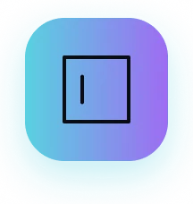
Fields and states
Interface design: input fields, their states and copy
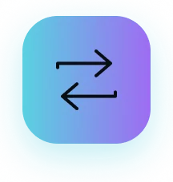
Recurring payments
A new scenario: repeat frequency and payment end date
Transfer types and modals
Standard and instant transfers, payment date selection, a new SWIFT modal
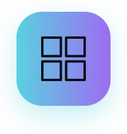
Components and auto layouts
Created a toggle, chips, a calendar and a placeholder with an icon; refined button states


Home screen
The Fintiba Banking home page: balance and account details, pending operations and transaction history with search and filter. A transfer starts here.
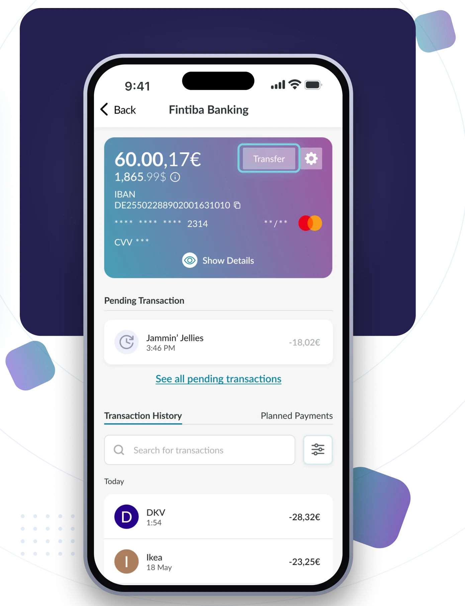
User flow
From recipient to confirmation
The main transfer path and the screens with states that I designed. Click on the screens to view them full size.
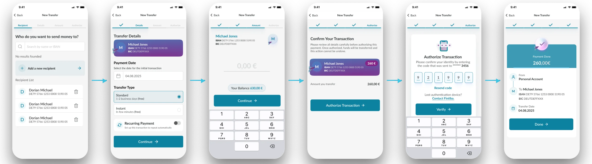
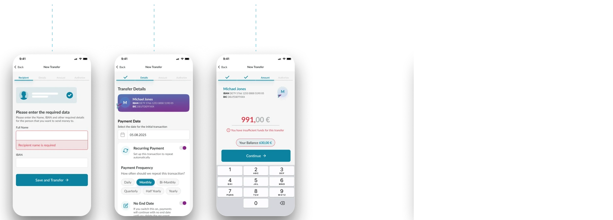
Branch by recipient's country
The recipient bank's country defines the available transfer types and the form fields.
European country
A standard transfer can be made recurring
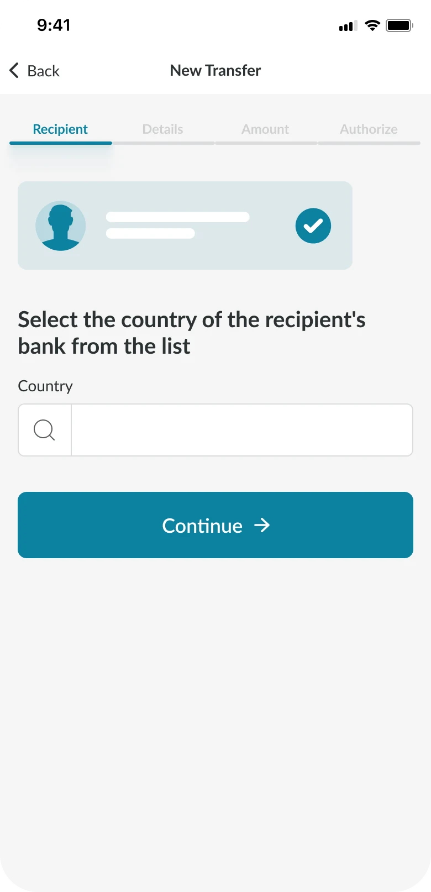
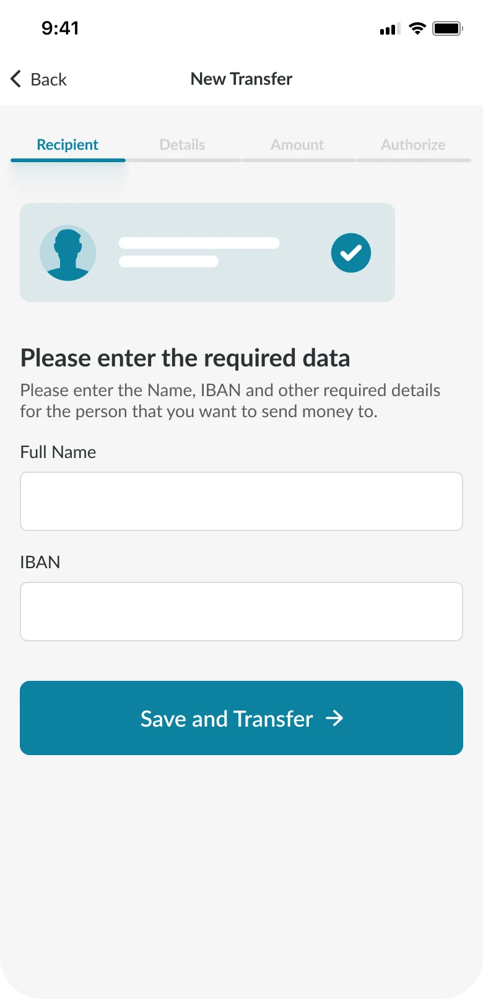
A specific list of countries
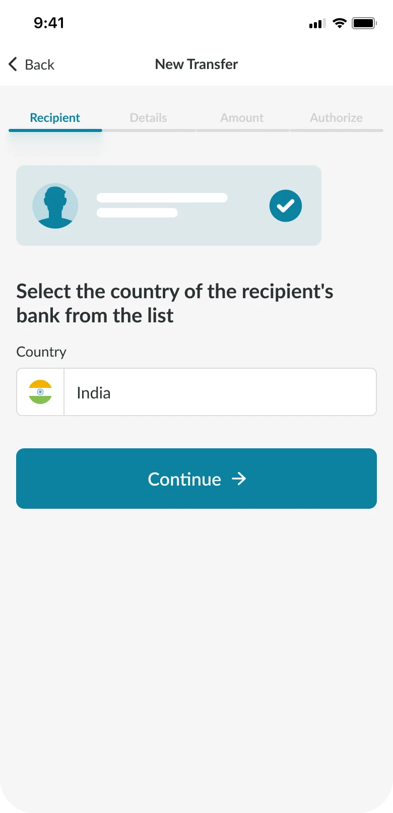
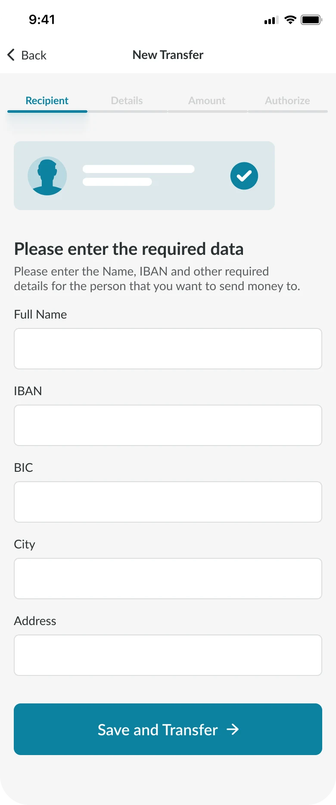
Transfer form
How the transfer form works
Three steps with states and conditions. Click a step to switch.
Recipient
Selecting or adding a recipient
A recipient list, search and adding a new one. I designed the empty state and a form with field validation.
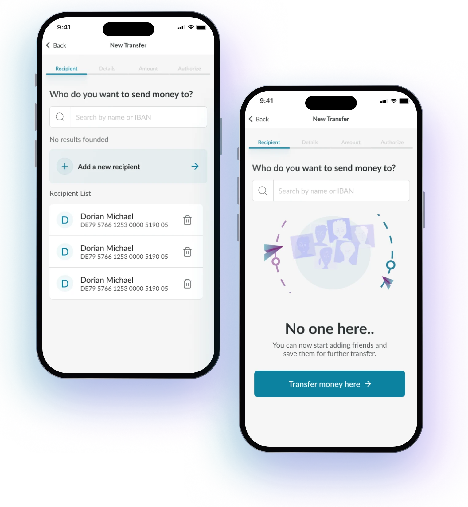
Transfer type
Standard or instant
Choosing the transfer type: standard (1–2 business days, free) or instant (a few minutes, free), with the payment date next to it. A standard transfer can be made recurring — the user decides. I added both types to the payment logic. Available options depend on the recipient's country: both types for European countries, and SWIFT only for a specific list of countries.
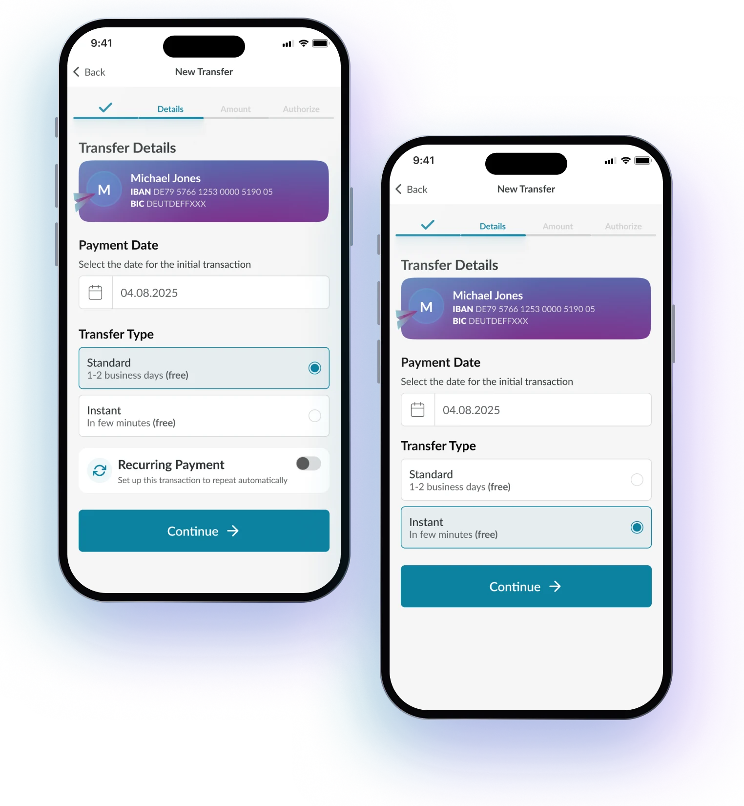
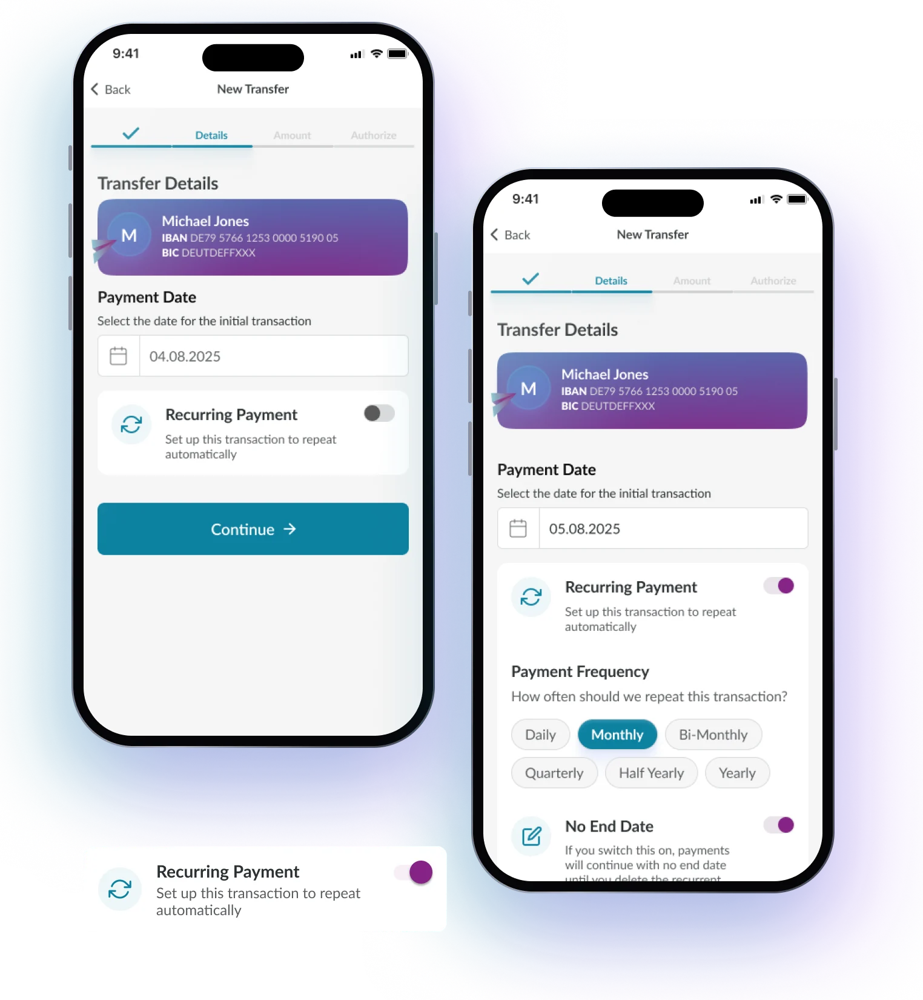
Transfer parameters
Recurring payments
Payment date and recurring transfer settings: frequency, end date and a “No end date” toggle. I added this scenario to the process.
Key decisions
Recurring payments: clearer and calmer
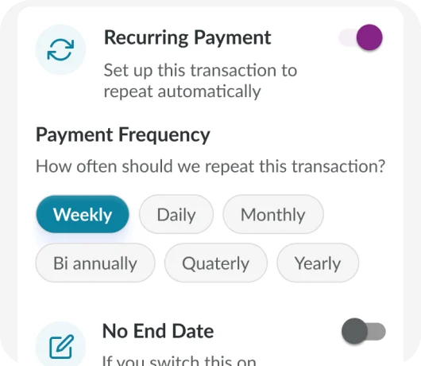
01Frequency as chips
I showed the repeat frequency as chips: they stand out more and draw the user's attention.
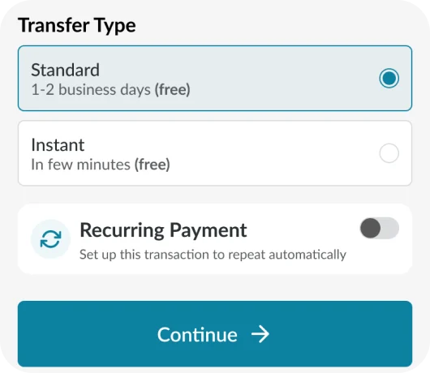
02Standard only
The recurring payment block appears only when a standard transfer is selected. The user decides whether to turn it on.
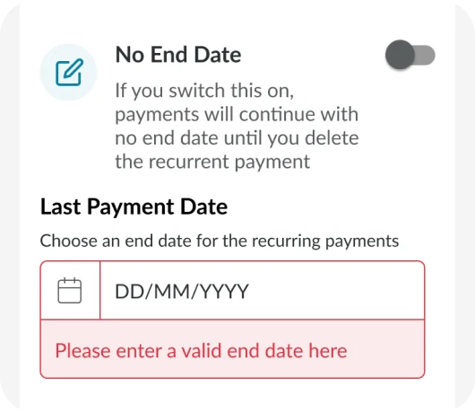
03Last payment date
The toggle is off by default so a payment doesn't stay recurring forever by accident.
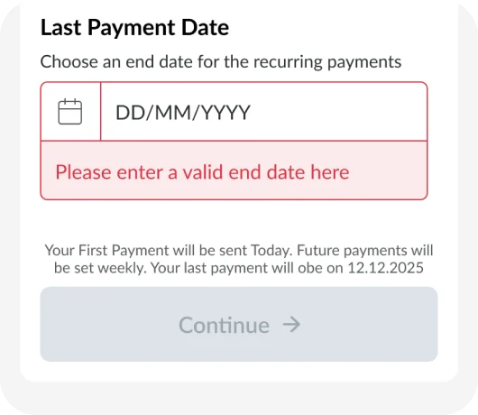
04Errors and the button
Only key cases are highlighted in red: no last date, or the start date is today. The error disappears once the input is correct; while it's shown, Continue is disabled.
What I learned
To think from the user's side: the simpler the flow, the clearer it is.
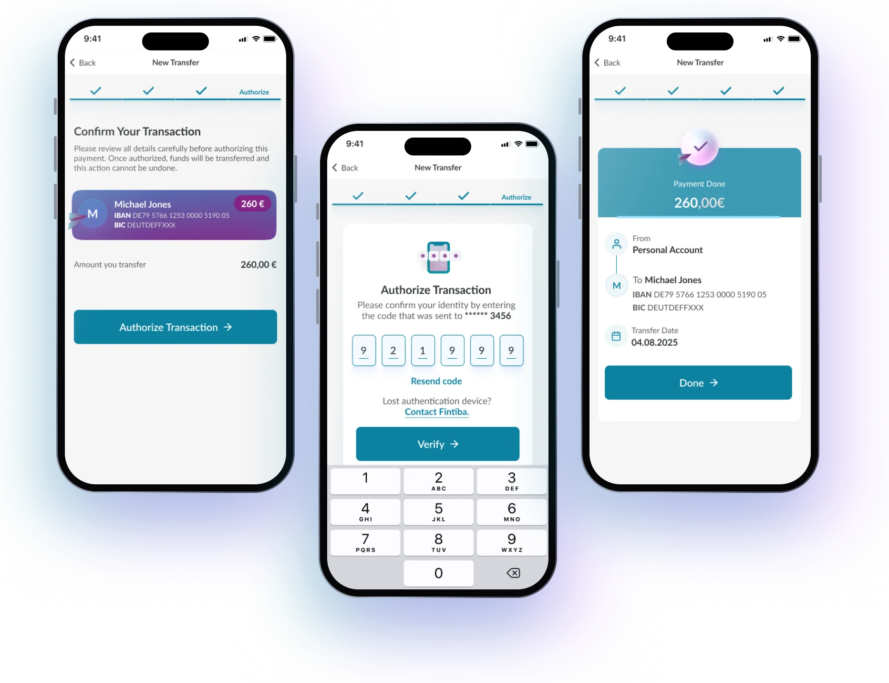
Confirmation
Review, code and summary
A summary before sending, code confirmation and a final screen with payment details.
Web
Parameters and validation
The parameters form with recurring payments and field validation states.
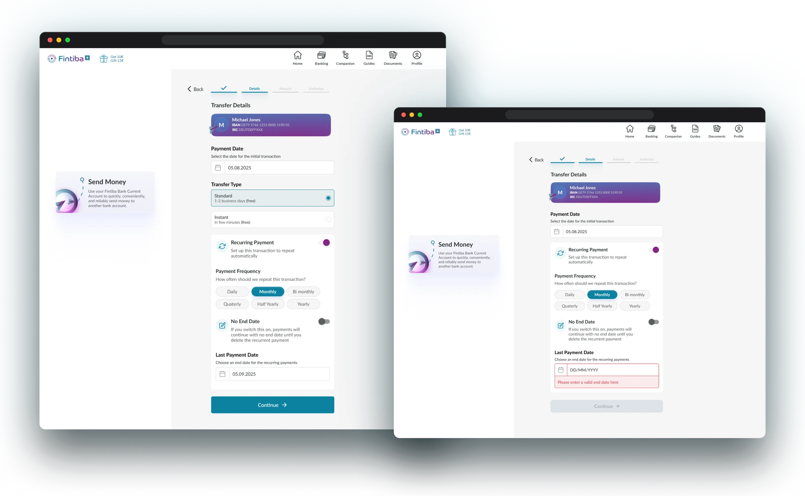
International transfers
SWIFT terms
in a modal window
Before sending, the user learns how the payment will be processed and confirms the terms. For an international transfer the form asks for BIC, city and address. I added this modal as a new one.
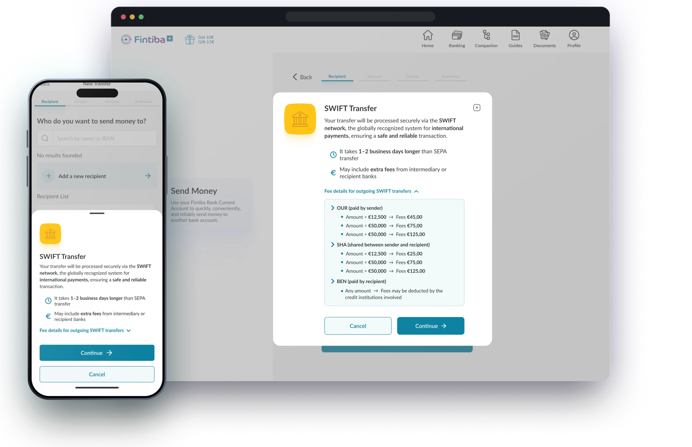
Result
The Banking team approved the solution.
The interfaces I designed shipped to the product.
- A main path of 6 steps, from recipient to the "Done" screen, and 5 branches: new recipient, recurring payment, insufficient funds, and two branches by recipient country: European and SWIFT. All for web and mobile app.
- Added the recurring payment scenario: frequency, end date and error states.
- Interfaces are built on design system components; new components (toggle, chips, calendar) expanded it.